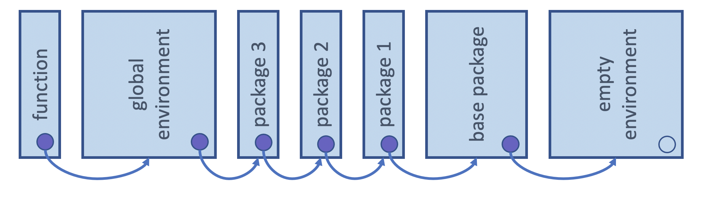
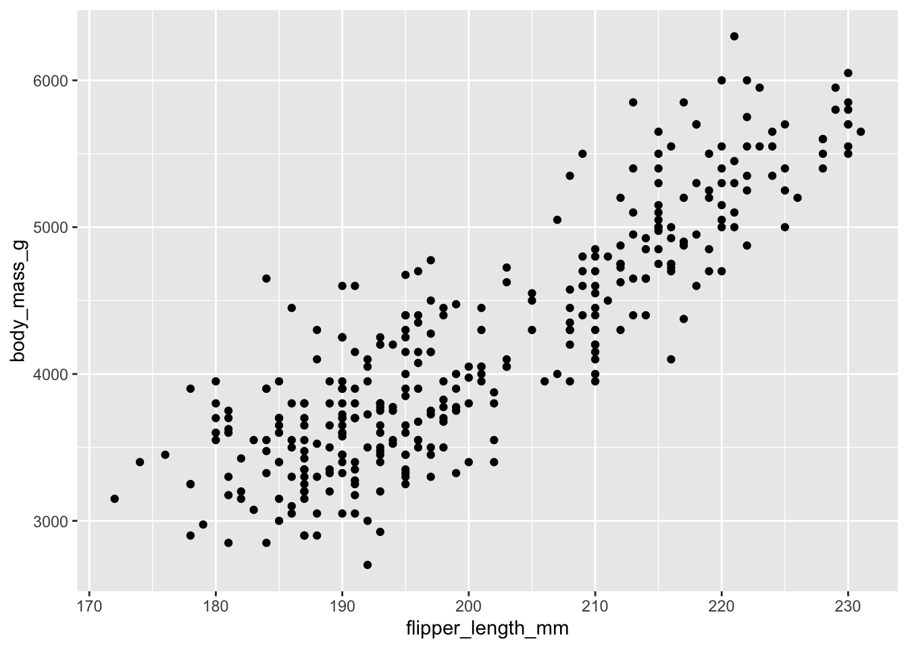
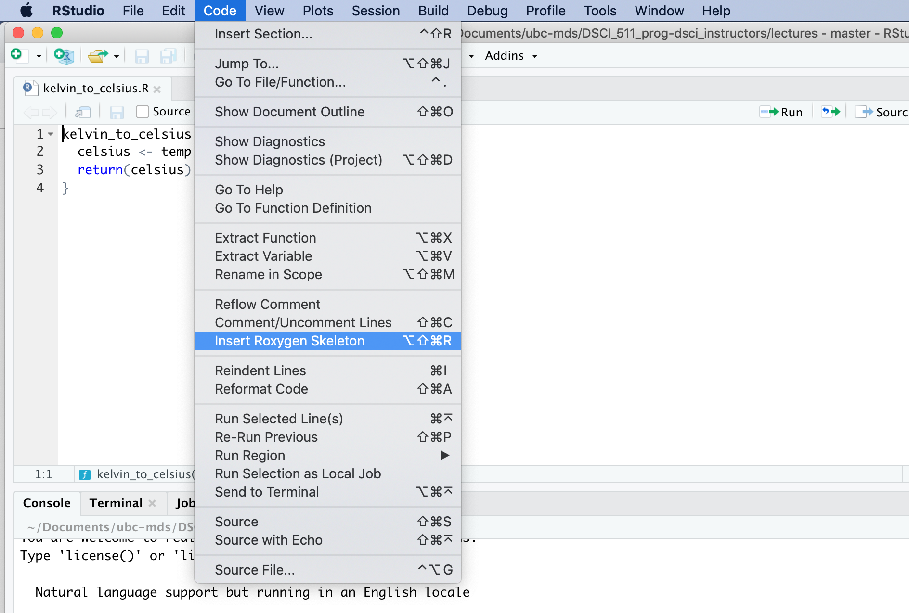

add_two_numbers <- function(x, y) {
x + y
}
add_two_numbers(1, 4)[1] 5In this course, we will get to practice writing functions (and then testing them) in the R programming language. Given this has not been covered in the course pre-requisites, we will cover it here briefly. To learn more about functions in R, we refer you to the functions chapter in the Advanced R book.
variable <- function(…arguments…) { …body… } to create a function and give it a nameExample:
add_two_numbers <- function(x, y) {
x + y
}
add_two_numbers(1, 4)[1] 5return (as shown below).math_two_numbers <- function(x, y, operation) {
if (operation == "add") {
return(x + y)
}
x - y
}math_two_numbers (1, 4, "add")[1] 5math_two_numbers (1, 4, "subtract")[1] -3Default values can be specified in the function definition:
math_two_numbers <- function(x, y, operation = "add") {
if (operation == "add") {
return(x + y)
}
x - y
}math_two_numbers (1, 4)[1] 5math_two_numbers (1, 4, "subtract")[1] -3...If we want our function to be able to take extra arguments that we don’t specify, we must explicitly convert ... to a list (otherwise ... will just return the first object passed to ...):
add <- function(x, y, ...) {
print(list(...))
}
add(1, 3, 5, 6)[[1]]
[1] 5
[[2]]
[1] 6R’s lexical scoping follows several rules, we will cover the following 3:
Object names which are defined inside a function mask object names defined outside of that function. For example, below x is first defined in the global environment, and then also defined in the function environment. x in the function environment masks x in the global environment, so the value of 5 is used in to_add + x instead of 10:
x <- 10
add_to_x <- function(to_add) {
x <- 5
to_add + x
}
add_to_x(2)[1] 7If a function refers to an object name that is not defined inside the function, then R looks at the environment one level above. And if it is not found there, it again, looks another level above. This will happen all the way up the environment tree until it searches all possible environments for that session (including the global environment and loaded packages).

Attribution: Derived from Advanced R by Hadley Wickham
Here x is not defined in the function environment, and so R then looks one-level up to the global environment to try to find x. In this case it does and it is then used to calculate to_add + x:
x <- 10
add_to_x <- function(to_add) {
to_add + x
}
add_to_x(2)[1] 12R does not look up the values for objects it references when it is defined/created, instead it does this when the function is called. This can lead to the function returning different things depending on the values of the objects it references outside of the function’s environment.
For example, each time the function add_to_x is run, R looks up the current value of x and uses that to compute to_add + x:
add_to_x <- function(to_add) {
to_add + x
}
x <- 10
add_to_x(2)[1] 12x <- 20
add_to_x(2)[1] 22Functions in R have no memory of what happened the last time they were called. This happens because a new function environment is created, R created a new environment in which to execute it.
For example, even though we update the value of x inside the function by adding two to it every time we execute it, it returns the same value each time, because R creates a new function environment each time we run it and that environment has no recollection of what happened the last time the function was run:
x <- 10
add_to_x <- function(to_add) {
x <- to_add + x
x
}
add_to_x(2)[1] 12add_to_x(2)[1] 12add_to_x(2)[1] 12In R, function arguments are lazily evaluated: they’re only evaluated if accessed.
Knowing that, now consider the add_one function written in both R and Python below:
# R code (this would work)
add_one <- function(x, y) {
x <- x + 1
return(x)
}# Python code (this would not work)
def add_one(x, y):
x = x + 1
return xWhy will the above add_one function will work in R, but the equivalent version of the function in python would break?
y is, it will break even though it is not used in the function.y is never referenced inside the function, R doesn’t complain, or even notice it.add_one in Radd_one <- function(x, y) {
x <- x + 1
return(x)
}This works:
add_one(2, 1)3and so does this:
add_one(2)3add_one in Pythondef add_one(x, y):
x = x + 1
return x`This works:
add_one(2, 1)3This does not:
add_one(2)---------------------------------------------------------------------------
TypeError Traceback (most recent call last)
<ipython-input-5-f2e542671748> in <module>
----> 1 add_one(2)
TypeError: add_one() missing 1 required positional argument: 'y'Let’s you have easy to use interactive code like this:
dplyr::select(mtcars, mpg, cyl, hp, qsec) mpg cyl hp qsec
Mazda RX4 21.0 6 110 16.46
Mazda RX4 Wag 21.0 6 110 17.02
Datsun 710 22.8 4 93 18.61
Hornet 4 Drive 21.4 6 110 19.44
Hornet Sportabout 18.7 8 175 17.02
Valiant 18.1 6 105 20.22
Duster 360 14.3 8 245 15.84
Merc 240D 24.4 4 62 20.00
Merc 230 22.8 4 95 22.90
Merc 280 19.2 6 123 18.30
Merc 280C 17.8 6 123 18.90
Merc 450SE 16.4 8 180 17.40
Merc 450SL 17.3 8 180 17.60
Merc 450SLC 15.2 8 180 18.00
Cadillac Fleetwood 10.4 8 205 17.98
Lincoln Continental 10.4 8 215 17.82
Chrysler Imperial 14.7 8 230 17.42
Fiat 128 32.4 4 66 19.47
Honda Civic 30.4 4 52 18.52
Toyota Corolla 33.9 4 65 19.90
Toyota Corona 21.5 4 97 20.01
Dodge Challenger 15.5 8 150 16.87
AMC Javelin 15.2 8 150 17.30
Camaro Z28 13.3 8 245 15.41
Pontiac Firebird 19.2 8 175 17.05
Fiat X1-9 27.3 4 66 18.90
Porsche 914-2 26.0 4 91 16.70
Lotus Europa 30.4 4 113 16.90
Ford Pantera L 15.8 8 264 14.50
Ferrari Dino 19.7 6 175 15.50
Maserati Bora 15.0 8 335 14.60
Volvo 142E 21.4 4 109 18.60Notes: - There’s more than just lazy evaluation happening in the code above, but lazy evaluation is part of it. - package::function() is a way to use a function from an R package without loading the entire library.
Sometimes our code is correct but we still encounter errors. This commonly occurs with functions when users attempt to use them in weird and creative ways that the developer did not intend. Developers are well advised to try to anticipate some of this user behaviour and guard against this in a way that can be of help to the user. One way to do this is to have a function fail intentionally when incorrect user input is given.
Imagine we have a simple function to convert temperatures from Fahrenheit to Celsius:
fahr_to_celsius <- function(temp) {
(temp - 32) * 5/9
}What if our user anticipates that our function can handle numbers written as strings? When this happens our users gets a somewhat cryptic error message (which is inversely correlated with their knowledge of the R programming language):
fahr_to_celsius("thirty")Error in temp - 32: non-numeric argument to binary operator
Traceback:
1. fahr_to_celsius("thirty")This error message is not as helpful as it could be! Also, if this calculation happened to take a long time, it might be nicer to check the data type before we attempt the calculation and then if the wrong data type was given, throw an purposeful error with a more helpful error message. One way we can do this simply in R is using a conditional (i.e., if statement) to test the type and then calling stop with a useful error message if the type is incorrect.
For example with the fahr_to_celsius function, we can use if(!is.numeric(temp)) to check whether temp is not numeric. And then if it is not, stop causes a break and the printing out of the more helpful error message “fahr_to_celsius expects a vector of numeric values
fahr_to_celsius <- function(temp) {
if(!is.numeric(temp)) {
stop("`fahr_to_celsius` expects a vector of numeric values")
}
(temp - 32) * 5/9
}fahr_to_celsius("thirty")Error in fahr_to_celsius("thirty"): `fahr_to_celsius` expects a vector of numeric values
Traceback:
1. fahr_to_celsius("thirty")
2. stop("`fahr_to_celsius` expects a vector of numeric values") # at line 3 of file <text>If you wanted to issue a warning instead of an error, you could use warning in place of stop in the example above. However, in most cases it is better practice to throw an error than to print a warning…
More advanced exception handling exists in R, and I invite interested learner to read more about it here in the Condition Handling and Defensive Programming sections of Advanced R.
tidyverse functionsWhen using tidyverse functions, we can “pretend” that the data frame column names are objects in the global environment and refer to them without quotations (e.g., ""). In this section we use dplyr and the penguins data set from the palmerpenguins package:
library(dplyr)
Attaching package: 'dplyr'The following objects are masked from 'package:stats':
filter, lagThe following objects are masked from 'package:base':
intersect, setdiff, setequal, unionlibrary(palmerpenguins)
Attaching package: 'palmerpenguins'The following objects are masked from 'package:datasets':
penguins, penguins_rawpenguins |>
filter(species == "Gentoo", year == 2007)# A tibble: 34 × 8
species island bill_length_mm bill_depth_mm flipper_length_mm body_mass_g
<fct> <fct> <dbl> <dbl> <int> <int>
1 Gentoo Biscoe 46.1 13.2 211 4500
2 Gentoo Biscoe 50 16.3 230 5700
3 Gentoo Biscoe 48.7 14.1 210 4450
4 Gentoo Biscoe 50 15.2 218 5700
5 Gentoo Biscoe 47.6 14.5 215 5400
6 Gentoo Biscoe 46.5 13.5 210 4550
7 Gentoo Biscoe 45.4 14.6 211 4800
8 Gentoo Biscoe 46.7 15.3 219 5200
9 Gentoo Biscoe 43.3 13.4 209 4400
10 Gentoo Biscoe 46.8 15.4 215 5150
# ℹ 24 more rows
# ℹ 2 more variables: sex <fct>, year <int>Compare this with the same filter in base R, where every column name is written out as penguins$:
penguins[penguins$species == "Gentoo" & penguins$year == 2007, ]# A tibble: 34 × 8
species island bill_length_mm bill_depth_mm flipper_length_mm body_mass_g
<fct> <fct> <dbl> <dbl> <int> <int>
1 Gentoo Biscoe 46.1 13.2 211 4500
2 Gentoo Biscoe 50 16.3 230 5700
3 Gentoo Biscoe 48.7 14.1 210 4450
4 Gentoo Biscoe 50 15.2 218 5700
5 Gentoo Biscoe 47.6 14.5 215 5400
6 Gentoo Biscoe 46.5 13.5 210 4550
7 Gentoo Biscoe 45.4 14.6 211 4800
8 Gentoo Biscoe 46.7 15.3 219 5200
9 Gentoo Biscoe 43.3 13.4 209 4400
10 Gentoo Biscoe 46.8 15.4 215 5150
# ℹ 24 more rows
# ℹ 2 more variables: sex <fct>, year <int>However, referring to column names without quotations leads to problems when we try to use them in a function. For example,
filter_penguins <- function(col, val) {
filter(penguins, col == val)
}
filter_penguins(species, "Gentoo")Error in `filter()`:
ℹ In argument: `col == val`.
Caused by error:
! object 'species' not foundWhy does filter work with non-quoted variable names, but our function filter_penguins fail? filter does more behind the scenes than we see: it captures the code we give it (col == val) and runs that code inside the data frame, so that names which match a column are found as columns first. This is called data masking: the columns of the data frame “mask” (take priority over) objects with the same name in our environment. Here, penguins has no column called col, so filter uses our function’s col argument instead, and R then goes looking for an object called species in our environment, which does not exist. So to make this work for our function, we need to do a little more work too.
Given that this is not a course in R programming, we will not go into the details of how data masking works here, but we will show the patterns you need to handle it. For learners interested to learn more about why this happens, the Non-standard evaluation in R appendix rebuilds a simple version of select() step by step to show how it works, and Section 65.3.7 at the end of this section lists the tidyverse documentation these patterns come from.
tidyverse argumentsNot every tidyverse argument handles column names in the same way. There are two kinds, and which kind you are using decides which pattern you need:
filter(), mutate(), summarise(), arrange(), group_by(), count(), and aes() in ggplot2.starts_with(): select(), rename(), relocate(), and the .cols argument of across(). pull() chooses a single column in a similar way, but it has a quirk with column names stored in strings (see Section 65.3.4.3).The help page of each function says which kind each argument is: look for <data-masking> or <tidy-select> in the description of the argument (for example, in ?dplyr::filter and ?dplyr::select).
The other half of the question is how the column name reaches your code. There are two common cases:
filter_penguins(species, "Gentoo").col <- "species". This is what you get from command line arguments (see the Non-interactive scripts chapter), from configuration files, and from a vector of column names you loop over.Together, the two kinds of arguments and the two cases give four patterns:
| Bare name passed into your function | Column name stored in a string | |
|---|---|---|
Data masking (filter(), mutate(), summarise(), group_by(), aes()) |
{ col } |
.data[[col]] |
Tidy selection (select(), rename(), relocate(), across()) |
{ cols } |
all_of(cols) or any_of(cols) |
pull() |
{ col } |
.data[[col]] |
The rest of this section works through each of them.
tidyverse functions by embracing column names: { }The { } operator (pronounced “curly curly”), from the rlang package, passes the code your user typed through your function, so that the tidyverse function receives it just as if the user had called it directly. To use the { } operator, we “embrace” the argument when we refer to it inside our function body.
Here’s the function we show above working when we use the { } operator to “embrace” the unquoted column name:
filter_penguins <- function(col, val) {
filter(penguins, {{ col }} == val)
}
filter_penguins(species, "Gentoo")# A tibble: 124 × 8
species island bill_length_mm bill_depth_mm flipper_length_mm body_mass_g
<fct> <fct> <dbl> <dbl> <int> <int>
1 Gentoo Biscoe 46.1 13.2 211 4500
2 Gentoo Biscoe 50 16.3 230 5700
3 Gentoo Biscoe 48.7 14.1 210 4450
4 Gentoo Biscoe 50 15.2 218 5700
5 Gentoo Biscoe 47.6 14.5 215 5400
6 Gentoo Biscoe 46.5 13.5 210 4550
7 Gentoo Biscoe 45.4 14.6 211 4800
8 Gentoo Biscoe 46.7 15.3 219 5200
9 Gentoo Biscoe 43.3 13.4 209 4400
10 Gentoo Biscoe 46.8 15.4 215 5150
# ℹ 114 more rows
# ℹ 2 more variables: sex <fct>, year <int>{ } works the same way for tidy selection arguments, so the users of your function can pass anything that select() accepts, including several columns at once and selection helpers:
select_penguins <- function(cols) {
select(penguins, {{ cols }})
}
select_penguins(c(species, island))# A tibble: 344 × 2
species island
<fct> <fct>
1 Adelie Torgersen
2 Adelie Torgersen
3 Adelie Torgersen
4 Adelie Torgersen
5 Adelie Torgersen
6 Adelie Torgersen
7 Adelie Torgersen
8 Adelie Torgersen
9 Adelie Torgersen
10 Adelie Torgersen
# ℹ 334 more rowsselect_penguins(starts_with("bill"))# A tibble: 344 × 2
bill_length_mm bill_depth_mm
<dbl> <dbl>
1 39.1 18.7
2 39.5 17.4
3 40.3 18
4 NA NA
5 36.7 19.3
6 39.3 20.6
7 38.9 17.8
8 39.2 19.6
9 34.1 18.1
10 42 20.2
# ℹ 334 more rowsThere are several ways to implement the usage of unquoted column names in R, and the { } operator only works with functions that use data masking or tidy selection, such as the functions from the tidyverse. Please refer to the Metaprogramming chapters of Advanced R if you need to do this with other functions.
When the column name arrives as a string, { } is not the tool to use. { } passes along code, and a variable holding the string "species" is not the code species. Worse, the mistake does not cause an error:
filter_penguins(col = "species", val = "Gentoo")# A tibble: 0 × 8
# ℹ 8 variables: species <fct>, island <fct>, bill_length_mm <dbl>,
# bill_depth_mm <dbl>, flipper_length_mm <int>, body_mass_g <int>, sex <fct>,
# year <int>We get no rows back, because filter compared the string "species" to the string "Gentoo", which is never true. Instead, we need to tell the tidyverse function “this is a string: use the column with this name”. How we do that depends on the kind of argument.
.data pronounIn data masking arguments, we look the column up in .data with double square brackets, .data[[col]]:
group_col <- "species"
value_col <- "body_mass_g"
penguins |>
group_by(.data[[group_col]]) |>
summarise(mean_mass = mean(.data[[value_col]], na.rm = TRUE))# A tibble: 3 × 2
species mean_mass
<fct> <dbl>
1 Adelie 3701.
2 Chinstrap 3733.
3 Gentoo 5076.This works in any data masking argument, including aes() in ggplot2, which is handy when a script takes the columns to plot as command line arguments:
library(ggplot2)
x_col <- "flipper_length_mm"
y_col <- "body_mass_g"
ggplot(penguins, aes(x = .data[[x_col]], y = .data[[y_col]])) +
geom_point(na.rm = TRUE)
If the string does not match a column name, .data[[col]] stops with an error that names the missing column, rather than quietly giving you the wrong answer:
penguins |>
summarise(mean_mass = mean(.data[["body_mass"]], na.rm = TRUE))Error in `summarise()`:
ℹ In argument: `mean_mass = mean(.data[["body_mass"]], na.rm = TRUE)`.
Caused by error in `.data[["body_mass"]]`:
! Column `body_mass` not found in `.data`..data is not a data frame. It is a special object, called a pronoun, that stands for “the columns of the data this function is working on”, and it only works inside data masking arguments. You can also write .data$species, which makes it explicit that species is a column and not an object in your environment, but only .data[[col]] lets you use a column name stored in a variable.
all_of() and any_of()In tidy selection arguments, we wrap the strings in all_of():
cols <- c("species", "island", "body_mass_g")
penguins |>
select(all_of(cols))# A tibble: 344 × 3
species island body_mass_g
<fct> <fct> <int>
1 Adelie Torgersen 3750
2 Adelie Torgersen 3800
3 Adelie Torgersen 3250
4 Adelie Torgersen NA
5 Adelie Torgersen 3450
6 Adelie Torgersen 3650
7 Adelie Torgersen 3625
8 Adelie Torgersen 4675
9 Adelie Torgersen 3475
10 Adelie Torgersen 4250
# ℹ 334 more rowsall_of() stops with an error if any of the names is not a column, which catches typos early:
penguins |>
select(all_of(c("species", "flipper_lenght_mm")))Error in `select()`:
ℹ In argument: `all_of(c("species", "flipper_lenght_mm"))`.
Caused by error in `all_of()`:
! Can't subset elements that don't exist.
✖ Element `flipper_lenght_mm` doesn't exist.any_of() is the forgiving version: it skips names that are not columns. That is useful when, for example, you want to drop columns that may or may not be in the data:
penguins |>
select(!any_of(c("year", "sex", "comments")))# A tibble: 344 × 6
species island bill_length_mm bill_depth_mm flipper_length_mm body_mass_g
<fct> <fct> <dbl> <dbl> <int> <int>
1 Adelie Torgersen 39.1 18.7 181 3750
2 Adelie Torgersen 39.5 17.4 186 3800
3 Adelie Torgersen 40.3 18 195 3250
4 Adelie Torgersen NA NA NA NA
5 Adelie Torgersen 36.7 19.3 193 3450
6 Adelie Torgersen 39.3 20.6 190 3650
7 Adelie Torgersen 38.9 17.8 181 3625
8 Adelie Torgersen 39.2 19.6 195 4675
9 Adelie Torgersen 34.1 18.1 193 3475
10 Adelie Torgersen 42 20.2 190 4250
# ℹ 334 more rowsselect(cols)?
You will see older code that passes a variable holding strings straight to a tidy selection function, like select(cols). This usage is deprecated (since tidyselect 1.1.0) because it is ambiguous: if the data happens to have a column with the same name as your variable, the column wins, and you get the wrong columns without any warning. Here we add a column called cols to the data, and select(cols) returns it instead of the species and island columns we wanted:
cols <- c("species", "island")
penguins_extra <- mutate(penguins, cols = 0)
penguins_extra |>
select(cols)# A tibble: 344 × 1
cols
<dbl>
1 0
2 0
3 0
4 0
5 0
6 0
7 0
8 0
9 0
10 0
# ℹ 334 more rowsall_of() removes the ambiguity: it always treats cols as a variable holding column names.
penguins_extra |>
select(all_of(cols))# A tibble: 344 × 2
species island
<fct> <fct>
1 Adelie Torgersen
2 Adelie Torgersen
3 Adelie Torgersen
4 Adelie Torgersen
5 Adelie Torgersen
6 Adelie Torgersen
7 Adelie Torgersen
8 Adelie Torgersen
9 Adelie Torgersen
10 Adelie Torgersen
# ℹ 334 more rowsIn tidy selection arguments, do not use .data[[col]]: using .data there is deprecated (since tidyselect 1.2.0), and all_of() is its replacement.
pull(): the .data pronounpull() chooses a single column, and the tidyverse documentation suggests all_of() for it, as for the other tidy selection functions. However, pull(all_of(col)) has a quirk: if the data has a column with the same name as your variable, pull() returns that column, even inside all_of(), without an error or a warning (tidyselect issue #376). Here our variable is called col, and we add a column called col to the data:
col <- "body_mass_g"
penguins_col <- mutate(penguins, col = 0)
penguins_col |>
pull(all_of(col)) |>
mean(na.rm = TRUE)[1] 0We get the mean of the column called col (0), not of body_mass_g. .data[[col]] does not have this problem, so we use it with pull():
penguins_col |>
pull(.data[[col]]) |>
mean(na.rm = TRUE)[1] 4201.754Most of the time your data will not have a column with the same name as your variable, and both give the same answer. But in a script or a function, you do not know in advance which columns the data will have, so it is safer to use the version that cannot go wrong. The Non-standard evaluation in R appendix explains why these collisions happen.
pick() and across()Data masking functions such as group_by() and summarise() often need several columns at once. To use a tidy selection inside a data masking argument, wrap it in pick(), to use the selected columns as they are, or in across(), to apply a function to each of the selected columns:
group_cols <- c("species", "island")
value_cols <- c("bill_length_mm", "body_mass_g")
penguins |>
group_by(pick(all_of(group_cols))) |>
summarise(
across(all_of(value_cols), \(x) mean(x, na.rm = TRUE)),
.groups = "drop"
)# A tibble: 5 × 4
species island bill_length_mm body_mass_g
<fct> <fct> <dbl> <dbl>
1 Adelie Biscoe 39.0 3710.
2 Adelie Dream 38.5 3688.
3 Adelie Torgersen 39.0 3706.
4 Chinstrap Dream 48.8 3733.
5 Gentoo Biscoe 47.5 5076.pick() and across() take { } as well, so the same function can also accept bare names from its users: group_by(pick({{ group_cols }})).
:= is needed when assigning valuesFor similar reasons, the walrus operator (:=) is needed when writing functions that create new columns using unquoted column names with the tidyverse functions. R does not allow code on the left-hand side of = when naming an argument, so tidyverse functions accept := in its place:
group_summary <- function(data, group, col, fun) {
data |>
group_by({{ group }}) |>
summarise({{ col }} := fun({{ col }}, na.rm = TRUE))
}
group_summary(penguins, species, body_mass_g, mean)# A tibble: 3 × 2
species body_mass_g
<fct> <dbl>
1 Adelie 3701.
2 Chinstrap 3733.
3 Gentoo 5076.The left-hand side of := can also be a template for the new column’s name, using the syntax of the glue package: { } inserts the name of an embraced argument, and { } inserts the value of a variable holding a string.
mean_by <- function(data, group, col) {
data |>
group_by({{ group }}) |>
summarise("mean_{{ col }}" := mean({{ col }}, na.rm = TRUE))
}
mean_by(penguins, species, body_mass_g)# A tibble: 3 × 2
species mean_body_mass_g
<fct> <dbl>
1 Adelie 3701.
2 Chinstrap 3733.
3 Gentoo 5076.col <- "body_mass_g"
penguins |>
summarise("mean_{col}" := mean(.data[[col]], na.rm = TRUE))# A tibble: 1 × 1
mean_body_mass_g
<dbl>
1 4202.!!, enquo() and sym()In older code, blog posts and Stack Overflow answers, you will see other ways of doing the same things. They come from earlier versions of the tidyverse, before { }, .data and all_of() were the recommended tools:
| Older pattern | Use instead |
|---|---|
col <- enquo(col), then !!col |
{ col } |
!!sym(col) or !!as.name(col) for a string |
.data[[col]] in data masking and pull(), all_of(col) in tidy selection |
!!!syms(cols), for several strings |
pick(all_of(cols)) or across(all_of(cols)) in data masking, all_of(cols) in tidy selection |
select(cols), with cols holding strings |
select(all_of(cols)) |
aes_string(x = col) in ggplot2 |
aes(x = .data[[col]]) |
!! is not deprecated, and most of the older patterns still work. What is deprecated is aes_string() (since ggplot2 3.0.0), passing a variable holding strings straight to a tidy selection function (since tidyselect 1.1.0), and using .data inside tidy selection functions (since tidyselect 1.2.0). { } is shorthand for !!enquo(), and !! (the “injection” operator) and !!! (the “splice” operator) are still the right tools for more advanced metaprogramming; the Non-standard evaluation in R appendix shows how they work.
The patterns in this section come from the tidyverse documentation:
dplyr: { } for function arguments, .data[[var]] in data masking, and all_of() in tidy selection.dplyr reference pages for data masking and tidy selection arguments.rlang documentation, including across(all_of(vars)) to use a vector of column names in a data masking function..data and .env pronouns prevent them.!! and embracing with {{, in the rlang documentation.The deprecations mentioned in this section are documented in:
tidyselect FAQ on select(cols) versus select(all_of(cols))..data in tidy selection.aes_() and aes_string() and Using ggplot2 in packages, in the ggplot2 documentation.pull(all_of()) quirk.To learn how it all works underneath:
dplyr (slides and code), a talk by Daniel Chen that rebuilds select() step by step to explain quoting, quosures and the data mask. It was recorded in 2020, so a few of its patterns have since been superseded: use aes(x = .data[[col]]) instead of aes_string(), all_of(col) instead of passing a variable holding a string straight to select(), and .data[[col]] instead of rlang::parse_expr() with !!.Function documentation is extremely useful at both the time of function creation/development, as well as at the time of function usage by the user. At the time of creation/development, it is useful for clearly delineating and communication the planned function’s specifications. At the time of usage, it is often the primary documentation a user will refer to in order to understand how to use the function. If a function is not well documented, it will not be well understood or widely used.
In R, we write function documentation in a style that the roxygen2 R package can use to automatically generate nicely formatted documentation, accessible via R’s help function, when we create R packages. This is not available to us until we package our functions in software packages, however it is a good practice to get into because it helps ensure you document the key aspects of a function for your user, and it means that when you go to create an R package to share your function, you will have already correctly formatted the function documentation, saving future you some work!
#' Converts temperatures from Fahrenheit to Celsius.
#'
#' @param temp a vector of temperatures in Fahrenheit
#'
#' @return a vector of temperatures in Celsius
#'
#' @examples
#' fahr_to_celcius(-20)
fahr_to_celsius <- function(temp) {
(temp - 32) * 5/9
}RStudio has a nice feature to provide a roxygen2 formatted skeleton for function documentation. To use it, you put the cursor in the function definition, and then select the menu items “Code” > “Insert Roxygen Skeleton”:

To practice writing functions in R, you can attempt this worksheet: https://github.com/UBC-DSCI/dsci-310-student/blob/main/practice/worksheet_functions_in_r.ipynb
Note: to access the automated software tests for feedback on your answers, you will want to clone or download this GitHub repo and navigate to the practice directory.
In this course, we will get to practice writing functions (and then testing them) in the Python programming language. We will only cover it here briefly. To learn more about functions in Python, we refer you to the Module 6: Functions Fundamentals and Best Practices from the Programming in Python for Data Science course.
Functions in Python are defined using the reserved word def. A colon follows the function arguments to indicate where the function body should starte. White space, in particular indentation, is used to indicate which code belongs in the function body and which does not. A general form for fucntion definition is shown below:
def function_name(…function arguments…):
…function body…Here’s a working example:
add_two_numbers <- function(x, y) {
x + y
}
add_two_numbers(1, 4)[1] 5return (as shown below).math_two_numbers <- function(x, y, operation) {
if (operation == "add") {
return(x + y)
}
x - y
}math_two_numbers (1, 4, "add")[1] 5math_two_numbers (1, 4, "subtract")[1] -3Default values can be specified in the function definition:
math_two_numbers <- function(x, y, operation = "add") {
if (operation == "add") {
return(x + y)
}
x - y
}math_two_numbers (1, 4)[1] 5math_two_numbers (1, 4, "subtract")[1] -3...If we want our function to be able to take extra arguments that we don’t specify, we must explicitly convert ... to a list (otherwise ... will just return the first object passed to ...):